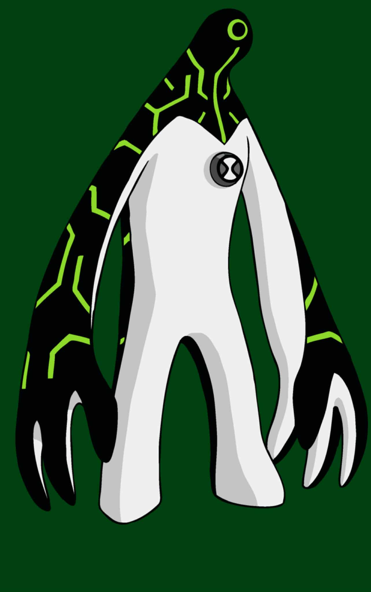

1.General Info:
Name: Upgrade
Species: Galvanic Mechamorph
Home Planet: Galvan B (moon of Galvan Prime)
First Appearance: Permanent Retirement
2.Appearance
1.Humanoid techno-organic alien with a white body and black-and-green circuitry patterns.
2.Arms and legs are segmented, resembling mechanical limbs.
3.Head is smooth with a simple face and no visible mouth.
4.Glows faintly in dark environments due to bioluminescence.
3.Abilities & Powers
1.Technological Possession: Can merge with and control any technology, enhancing its capabilities.
2.Shapeshifting: Able to reshape his body to fit or repair machines.
3.Size Alteration: Can adjust his size to fit into or manipulate various devices.
4.Nanite Constructs: Forms weapons or tools from his body to assist in tasks.
5.Regeneration: Can heal himself by merging with technology.
6.Optic Laser: Fires a powerful energy beam from his eyes.
7.Elasticity: His body can stretch and compress, allowing for flexible movement.
8.Enhanced Strength & Durability: Superior physical strength and resistance to damage.
9.Space & Underwater Survival: Can operate in space and underwater without harm.
10.Cyber World Interaction: Able to transfer into and manipulate digital environments.
4.Weaknesses
1.Electromagnetic Interference: Strong magnetic fields or EMPs can disrupt his abilities.
2.Overload Risk: Excessive integration with complex technologies can cause system failures.
3.Limited Combat Skills: While powerful, he lacks advanced hand-to-hand combat training.
4.Dependency on Technology: Without machines to merge with, his abilities are significantly reduced.